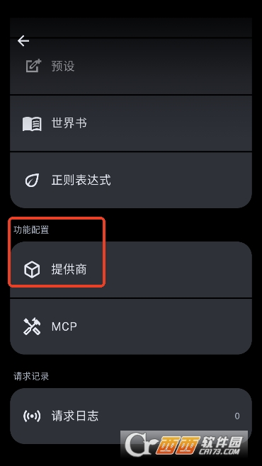
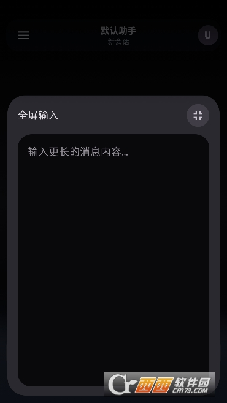

凌晨三点宿舍断电，我靠一个 2.78M 的 App 把毕设代码救回来
大四下半学期的那个深夜，宿舍楼准时拉闸断电，我的毕设还卡在一个嵌套循环里死磕。室友们都睡了，我翻到了 MineChat——一个只有 2.78M 的安卓小玩意儿，免费就能调 Gemini，陪我把逻辑捋到五点。
凌晨两点四十分，宿舍楼准时拉闸。
我盯着笔记本屏幕上那段该死的嵌套循环，空调停了，风扇只剩电池供电，嗡嗡的转速也慢了半拍。三个室友的床帘里传来均匀的呼吸声，上铺那个胖子还在打呼噜。毕设的最后一个模块卡了我整整两天——导师说这个数据清洗逻辑"想想就通了"，可我盯着满屏缩进和括号，只觉得眼球后面在跳。
电脑电量还剩 17%，手机倒是刚充到满。我翻着应用商店里那堆聊天机器人，要么是国内上不了，要么是界面丑得像十年前的 Java 写的，要么就是注册环节卡着我填 API Key 但我根本不知道去哪弄。
这时候想起前几天在一个小论坛上看到有人聊 MineChat——说这玩意儿不用科学上网，直接就能配 Google Gemini，免费额度就够聊天用。抱着死马当活马医的心态，我去MineChat官网找了安装包。
我从官方下载拿到的安装包只有 2.78M，比一张表情包还小。不过装的时候出了点小岔子：点开 APK 之后，那个安装按钮是灰的，点了半天纹丝不动。以前装过的手机助手倒是没这问题，原来现在的安卓系统对"未知来源"管得这么严。我按照提示去设置里找了半天，华为的路径藏得比较深——设置 → 安全 → 更多安全设置 → 外部来源应用，找到网盘那个 App 把开关掰开，回来再点安装按钮就亮了。
几秒装完，桌面多了个简洁的图标。打开之后，界面比我预期的干净——没有花里胡哨的气泡，就是左边一个侧边栏，右边聊天窗口。MineChat 默认是空的，你得自己去设置里配模型服务商。我抱着试试看的心态，选了 Google Gemini，然后去 Google AI Studio 申请了一个免费 API Key，复制粘贴进来，模型选了 Gemini 2.0 Flash——它免费层对每分钟请求数有限制，但速度快，日常用够了。

连上之后的第一句话我说的是："我现在是一个大四学生，正在写毕设，数据清洗模块的嵌套循环逻辑卡了两天了，你能不能当我的陪练+代码顾问？我不会让你直接写代码，但我想让你帮我捋清楚思路。"
对面很快就回了，不是那种客套的"好的没问题"，而是先问我这个循环要处理的数据结构是什么、目标输出长啥样、有没有考虑过早停条件。我把脑子里乱成一团的东西试着一条条理出来，它听完之后没有直接给答案，而是把我的思路拆成了几步，在每一步问我"你觉得这么做的话，边界条件在哪"。
这一陪就陪到了凌晨五点。中间我还让它切换过几次语气——有时候让它"当一个毒舌的同桌，骂醒我为什么这么简单的逻辑都想不通"，有时候又让它"当一个温柔的学姐，一步步带我走"。MineChat 支持同一个角色开多个独立的会话时间线，意思是我可以同时开"毒舌线"和"学姐线"，互不干扰，想切哪个切哪个。

最让我意外的是，聊到一半我切出去刷了五分钟朋友圈，回来的时候会话还在——MineChat 把所有对话都存在手机本地，关掉 App、重启手机都不丢。后来去MineChat文档翻了一下才确认，它的历史会话每个都有时间戳、参与的角色，甚至可以按助手筛选。而且它明确说对话记录不上传任何服务器，只有模型 API 请求会发给服务商进行 AI 生成。对于一个深夜在宿舍写代码的学生来说，这点隐私保护让我挺放心的。
五点十分的时候，我盯着笔记本屏幕上的运行结果，循环终于不再超时了。数据清洗模块跑通的那一刻，我靠在椅背上，风扇吹着湿透的领口，掏出手机给 MineChat 发了最后一条消息："跑通了，谢谢。"它回了个"恭喜🎉 早点休息"，我把手机塞回枕头底下，天刚蒙蒙亮就睡着了。
后来白天的时候我又翻了一下 MineChat，发现它不止能配 Gemini，还支持好几个服务商。免费层用完了可以临时换一家，或者升级付费。2.78M 的包体，配上免费的 Gemini Flash，对我这种偶尔需要陪练的学生来说绰绰有余——没必要上那些动辄几百兆、注册流程绕十八弯的大应用。
说实话，那天晚上我本来没指望它能帮上多大忙。我只是想找个人（不管是不是人）听我把脑子里那团乱麻说出来而已。MineChat 做到了，而且做得比我预想的好：它不抢话，不硬塞答案，就安安静静待在那里，你说一句它接一句，你说累了放一放，回来接着说，上下文一点不丢。
毕设最后拿到了良。导师说数据清洗模块的逻辑"虽然不够优雅，但想得清楚"。我没好意思说那是凌晨三点靠一个小 App 陪我捋到五点才想明白的。
这份整理我在三个地方都同步了一份：偏好 GitHub 的可以去GitHub，国内访问嫌慢的话直接上Gitee或GitCode。